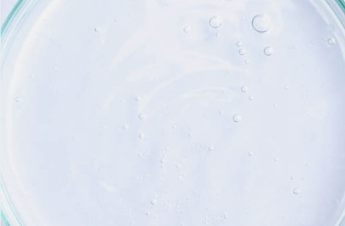
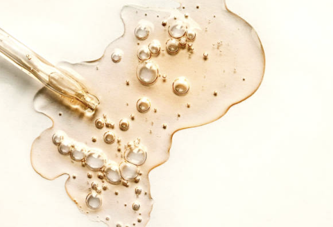

Essential Skincare Ingredient

A. Alpha Hydroxy Acids (AHAs)
- AHAs help exfoliate dead skin cells and prevent aging.
- They are plant- and animal-derived acids used in many skincare products.
- People use AHAs to remove dead skin and treat skin concerns like acne and dullness.

V. Vitamin C (Ascorbic Acid)
- One of the most effective antioxidants in skincare.
- Helps prevent excessive pigmentation and protects the skin from UV-induced aging.
- Boosts collagen production, making the skin look firm and bright.
C. Ceramides
- Ceramides are lipid molecules that help maintain a healthy skin barrier.
- Skincare products containing ceramides replenish the skin barrier, preventing dryness and infections.
H. Hyaluronic Acid (HA)
- A powerful humectant that can hold up to 1,000 times its weight in water, drawing and retaining moisture in the skin.
- It enhances elasticity and gives the skin a plump, hydrated appearance.

R. Retinol (Vitamin A Derivative)
- A form of Vitamin A that helps prevent skin aging.
- Unlike other ingredients that work on the skin’s surface, retinol penetrates deeper layers to stimulate collagen and elastin production.
- It hydrates the skin, fades dark spots, and treats acne and psoriasis.
- Recommended Usage: Use at 0.04% concentration, apply at night before moisturizer.